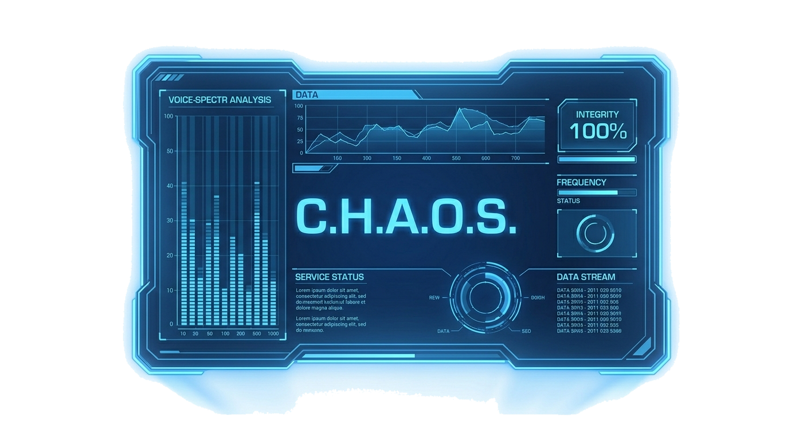

◆
鋼鉄戦線
STEEL FRONT
⛓
鉄 / ORE
0
/0
🔬
研究 / RP
0
+0/s
⚡
電力 / PWR
0/0
📦
採取 / MOD
0/0
📡
指揮 / CMD
0/0
―
―
オールト HP
🏠 執務室
▶ 次の波を呼ぶ
🛡 暫時防衛
⛏ 鉱区
🏭 生産ライン
🔬 研究
クリックでスキップ ▶

―
OORT COMMAND OFFICE
⛓
鉄 / ORE
0
🔬
研究 / RP
0
📦
採取 / MOD
0/0
⚔
メインストーリー
SORTIE ・ 前線へ出撃し物語を進める
▶
⛏
鉱区
RESOURCE ・ 採取モジュールの配置
▶
🏭
生産ライン
FACTORY ・ 設備配置とコンベア接続
▶
🔬
研究
RESEARCH ・ 兵科・規格・特殊の解放
▶
🛡
暫時防衛
章クリアで解放
▶
🤖
ケイオス
本日も業務、よろしくお願いしますね、マスター。
▶ クリックで話す
▼
スキップ ▶▶
続ける ▶